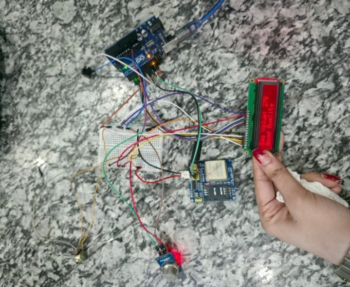
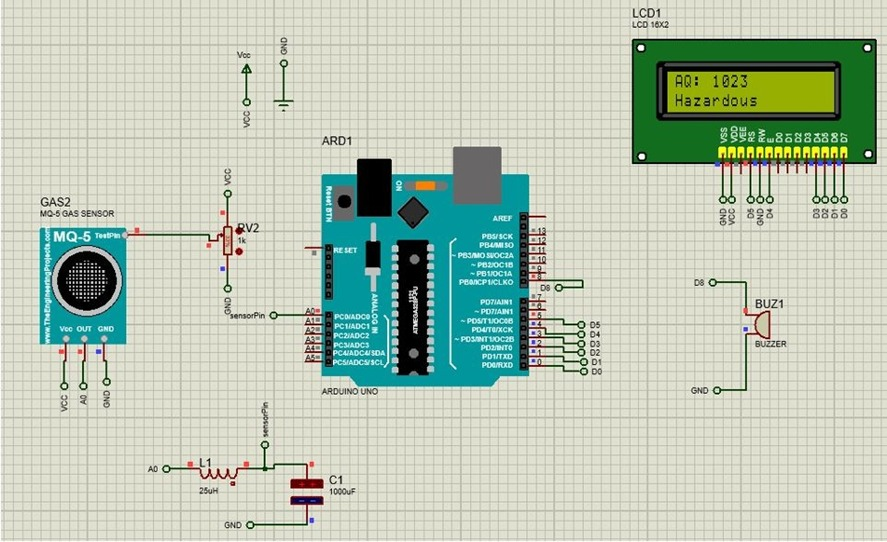

Smart Gas Leak Detection and Instant Alert System
This project is designed to monitor gas leakage in real-time and immediately notify users via GSM alerts. It ensures safety in homes and industrial environments by detecting harmful gases and triggering instant alarms.
Key Components
- Arduino Uno
- MQ-5 Gas Sensor
- Resistors
- SIM900A GSM Module
- Connecting Wires
- Breadboard
- Buzzer
- 16×2 Character LCD
This project demonstrates the integration of sensors, microcontrollers, and GSM technology for real-time monitoring and alerting applications.